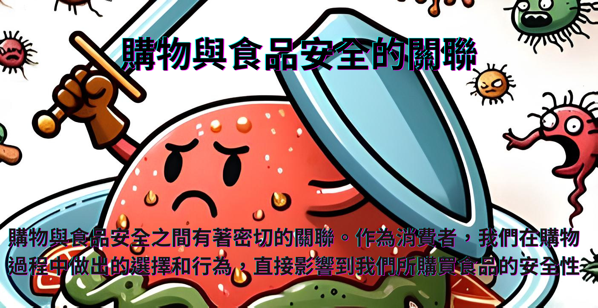

飲食危機是由於各種原因導致的飲食方面的威脅或危險
可能對個人產生影響的情況。



桃園縣觀音鄉大潭村， 當時查出污染源高銀化工疑似為生產含鎘和鉛的安定劑，排放的工廠廢水含鎘，造成農地遭受污染而種出鎘米。
台北市有業者長期把養豬餿水交給化工廠提煉成食用油，再轉售至市內各夜市攤商與小吃店。

衛生署查獲飲料食品違法添加有毒塑化劑，違法製成濃縮果粉、果汁、果漿、優酪粉等50多種食物香料。
農委會檢驗出彰化縣三家蛋雞場驗出芬普尼殘留量超出標準，成年人一天吃一顆半就會超量，受污染雞蛋遍及彰化縣、南投縣、台中市、高雄市、台南市、嘉義縣、屏東縣蛋雞場，流向至下游13縣市多家蛋商與餐廳及早餐店。

台北馬來西亞素食茶室餐廳疑似處理食物不當導致滋生唐菖蒲伯克氏菌Burkholderia gladioli，並分泌邦克列酸引起食物中毒，共造成31人中毒。